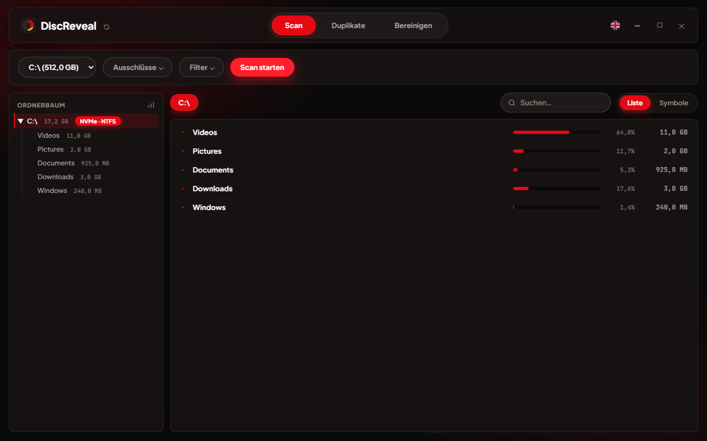

See what’s eating your disk space.
Find large folders, duplicate files and removable caches on your hard drive or SSD. DiscReveal shows where your space goes while it scans — free, portable and ready to run.
More space, less searching
Find what fills your drive. Choose what stays.
A full drive does not tell you what to remove. DiscReveal brings folder sizes, duplicate detection and Windows cleanup into one app, so you can find large files and decide what you no longer need.
- Results appear while the scan runs and keep updating
- Portable and ready to use — no installation, just download and launch
- Find files anywhere in the scanned drive, even inside nested folders
- Three delete modes: Recycle Bin, permanent, secure overwrite
- Extra confirmation for sensitive Windows and program folders
- Switch between English and German without restarting
- Find identical files across drives and keep an original when cleaning up copies
- See which file types and large files take up the most space
Features
From a full drive to a clear overview
Live results
See folder sizes while scanning and browse the results straight away. For a closer look, measure occupied file space, accounting for compression and shared files. Choose between a quick overview and a more detailed measurement.
Large files, easy to find
Start with the largest folders in list view, browse file icons in grid view, or search the whole scanned drive by name. Size bars and percentages show what makes the biggest difference.
Clean up with control
Choose what to remove and how. DiscReveal asks for confirmation before deletion and adds an extra warning for Windows contents and selected sensitive root and profile paths.
| Mode | Behavior |
|---|---|
| Recycle Bin | Recoverable, same as deleting in Explorer |
| Delete permanently | Skips the Recycle Bin |
| Secure delete | Overwrites accessible file contents with random data first; refuses hard-linked files |
Duplicate finder
Find identical files, even with different names, and see how much occupied space extra copies could free up. Filter the live results and choose suitable copies. One original stays; selected copies are checked again before moving to the Recycle Bin.
Understand your storage
Open the chart icon next to the folder tree to see storage by file type, size and age, plus the largest individual files. Use the charts to decide where to look next.
German and English
Use DiscReveal in English or German. Menus, explanations and dialogs switch immediately. The version-check page follows your language setting too.

Free up space in Windows
Check temporary files, browser and app caches, Windows leftovers and the Recycle Bin. Review the broad areas, deselect what you want to keep and confirm the cleanup. System areas may require administrator rights.
Benchmarks
Less waiting. More insight.
Around 200,000 files, 14.95 GB: DiscReveal displays the finished scan results in 1.19 seconds. Here is how the app compares with Windows commands and a script on the same folder.

Privacy & control
Your files. Your decision.
- Only within the scanned area
File actions are checked against the folder you scanned. The scan root itself and paths outside that area are excluded.
- Extra care for sensitive folders
Windows contents and selected system roots and user-profile paths require an additional acknowledgement explaining the risk. This extra protection does not apply to every subfolder.
- Preview without launching programs
Opening a program, script or shortcut shows it in Explorer rather than running it.
- Local scanning, no account
Scans run on your computer without telemetry or an account. The app interface blocks external requests. Checking for updates opens a page in your browser only when you click the update icon.
- Your data stays with you
Scan results stay in memory. Your settings are saved locally. A cache for faster repeat duplicate searches is optional, off by default and can be cleared. The interface also uses a local WebView2 profile. Scanned files and paths are not uploaded.
- Public source, tested features
The source code is public. Automated tests cover scanning, file actions, duplicate cleanup and the version-check page.
Download
Get DiscReveal
One portable executable. Download it and run it — no installation required.
discreveal-portable.exe
DiscReveal Portable · 5.4 MB
Download DiscReveal Release details on GitHubGet-FileHash discreveal-portable.exe -Algorithm SHA256How to check for updates →
- Operating system
- Windows 10 or 11, 64-bit
- Runtime
- Microsoft Edge WebView2; if missing, the app offers an installation link
- Download size
- 5.4 MB · .exe
- Installation
- None — copy and run
Screenshots
What it looks like
Learn & explore
Understand your files. Clean up with care.
Find space hogs and remove extra copies with DiscReveal. These two guides walk you through the steps in the app.
What is taking up space on my Windows drive?
Find large folders and files on Windows with DiscReveal. Follow the space usage from your drive down to the files you no longer need.
Read the article 3 minOrganization & disk spaceRemove duplicate files while keeping an original
Find duplicate files with DiscReveal, review identical copies and keep an original. Learn how filters and Recycle Bin cleanup work on Windows.
Read the article 3 minFAQ
Frequently asked questions
How does DiscReveal protect my files?
DiscReveal scans locally and never removes files without confirmation. Sensitive folders need an extra acknowledgement. Download from the official website or GitHub release; each release includes a fingerprint you can use to check the program file.
Does DiscReveal clean up junk automatically, or do I decide what goes?
You decide what to remove. The drive scan shows where your space goes. In the duplicate finder, “Select all suitable copies” selects personal documents and media while keeping one original per group. You review the selection before confirming cleanup; program and system files are excluded from those bulk suggestions.
What can I recover if I delete something by mistake?
Depends on the mode. Recycle Bin deletions are recoverable exactly like deleting in Explorer. Permanent and secure delete are not — secure delete overwrites accessible file contents first. On SSDs, older copies in internally managed blocks may remain.
Can I exclude folders from a scan?
Yes — add any folder to the exclusion list, or rely on the defaults. DiscReveal already skips the common game-library folders (Steam, Epic, GOG, Riot, EA, Ubisoft, Xbox) out of the box, since those rarely need auditing.
Can I filter the drive scan and duplicate search?
Yes. The drive scan has folder exclusions and size limits. The duplicate search has its own minimum and maximum file size, plus included or excluded file types. Its results can also be filtered live by name or path, size, extension and whether identical files share a name.
Can I scan a USB or external drive?
Yes, any local drive with a letter, USB included. The scanner adapts its thread count to the drive type — fewer parallel reads on USB and spinning disks, more on NVMe/SSD — so it stays fast without overloading the drive.
How is this different from checking a folder’s properties in Explorer?
Folder properties in Explorer measure the folder you chose. DiscReveal gives you an overview of the drive, with folder sizes, a searchable folder tree, charts and a separate duplicate finder.
Is DiscReveal really free?
Yes — no cost, no ads, no telemetry, no account. The official app is free for personal and internal business use. Its source code is publicly available to inspect. Modifications and commercial redistribution require permission; see the license.
Is DiscReveal portable?
Yes. Download the executable and run it without installing DiscReveal. You can launch it from a USB stick too. Keep discreveal_data with the app to take your preferences along. WebView2 is required; there is no DiscReveal background service.
Does duplicate cleanup keep an original?
Yes. One original stays in each duplicate group. Cleanup checks selected copies against that original again before moving them to the Recycle Bin. Changed or missing files and hard links are skipped. Potential savings use measured occupied space; unavailable measurements are identified and left out of the total. Space becomes free after emptying the Recycle Bin.
Why does the duplicate search skip files under 10 MB?
The default focuses on larger files, where removing a copy usually frees more space. Turn off “Exclude small files” to scan all sizes, or choose your own limit. The scan still needs to visit folders; the time saved depends on your files.
Does DiscReveal save or upload scan results?
Scan results stay in memory and are not uploaded. Settings are saved locally. The duplicate-search cache is off by default, requires your consent and can be cleared. WebView2 keeps a local interface profile. The update link includes only the app version, language and program fingerprint when available.
What does system cleanup include?
Choose Cleanup → Check everything. DiscReveal checks supported temporary files, browser, app, package and graphics caches, error reports, Windows system leftovers and the Recycle Bin. Results are preselected in broad areas; deselect anything you want to keep, then confirm one cleanup operation. Running apps and protected or recent files are skipped. Windows handles its system leftovers; protected areas need administrator rights. Previous Windows versions and the Recycle Bin are separate areas you can deselect. Their removal is permanent and may remove recovery or rollback options. Caches are rebuilt when needed. Nothing is deleted before you confirm.
Why can file size differ from occupied disk space?
File size describes how much data a file contains. Occupied space can differ because of compression, reserved blocks or several names pointing to the same file. For a quick overview, DiscReveal shows file sizes. Enable “Measure occupied space” under Scan → Filter for a more detailed measurement. It takes longer and counts shared files once. Filesystem metadata, snapshots and backups are outside this measurement.
What does an incomplete scan mean?
It means some data could not be fully examined, for example because you stopped the scan, access was denied or a file changed. The results you can see are still useful, but they do not cover everything. Check the notice and scan again when needed. An unavailable measurement is identified rather than presented as zero occupied space.
Find what is taking up your space.
Download DiscReveal, choose a drive and get a clearer picture of your storage.